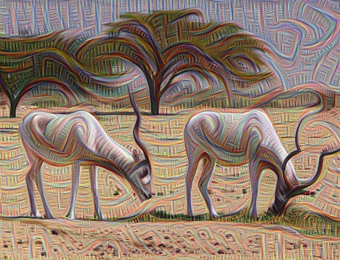
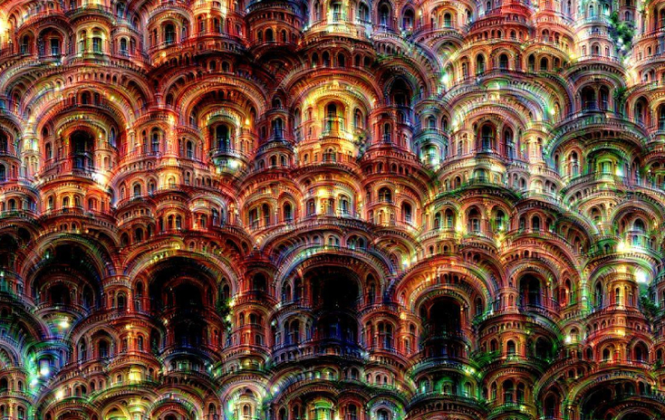

Deepdream¶
{kind=link}
http://googleresearch.blogspot.fr/2015/06/inceptionism-going-deeper-into-neural.html
https://github.com/yosinski/deep-visualization-toolbox
https://github.com/google/deepdream/blob/master/dream.ipynb
{kind=link}
inceptionism¶
https://github.com/jcjohnson/cnn-vis
Although CNNs perform well on a variety of tasks, it can be difficult to understand exactly what types of image features a CNN is using to work its magic. One trick for demystifying a CNN is to choose a neuron in a trained CNN, and attempt to generate an image that causes the neuron to activate strongly. We initialize the image with random noise, propagate the image forward through the network to compute the activation of the target neuron, then propagate the activation of the neuron backward through the network to compute an update direction for the image. We use this information to update the image, and repeat the process until convergence. This general strategy has been used to visualize the activations of individual neurons [8, 9], to generate images of particular object classes [5], to invert CNN features [1, 2], and to generate images to fool CNNs [3, 6].
Inceptionism builds on this line of work, adding three unique twists:
- Layer amplification: Instead of choosing a neuron and generating an image to maximize it, we instead choose a layer of the network and attempt to amplify the neurons in that layer that are already activated by the image. This leads to a feedback loop, causing the network to emphasize features of the image that are already present. Google’s blog post doesn’t specify many technical details around this point; in cnn-vis we achieve this by maximizing the sum of the absolute value and the square of each neuron in the chosen layer, but in principle any superlinear function of the chosen layer should work.
- Multiscale, high-res images: Because they are so computationally expensive, CNNs tend to work on relatively low-resolution images. The state-of-the-art GoogLeNet network [7], for example, works on input images that are 224x224 pixels. To generate higher-resolution images, Inceptionism “appl[ies] the algorithm iteratively on its own outputs and appl[ies] some zooming after each iteration”. In addition to giving high resolution images, this trick also causes the generated images to have structure at multiple scales, giving them a fractal-like appearance. In cnn-vis we implement this idea by tiling the image with overlapping 224x224 patches, and interleaving updates on each patch. After some number of iterations we upsample the image, retile it, and continue.
- Non-random initialization: Instead of initializing our generated image with random noise or zero as is common in the literature, Inceptionism (and cnn-vis!) allow you to start from a user-specified image. I’m not sure how much scientific value this has, but it sure does look cool!